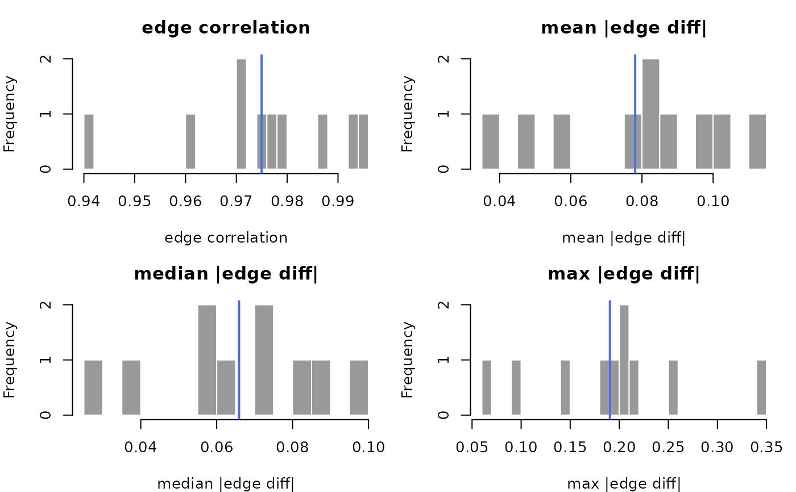

Assess the split-half reliability of a network's edge weights
Source:R/reliability.R
net_split_reliability.Rdnet_split_reliability() assesses the split-half reliability of a network's
edge weights. Split-half reliability is the agreement between networks
estimated on two random halves of the sample, which stand in for two
independent samples from the same population; it shows how reproducible the
estimated structure is at that sample size. Repeating the split many times
gives the distribution of this agreement rather than a value that depends on
one arbitrary split.
The function draws iter random splits, with a share split of the rows in
the first half, estimates a network on each half, and compares the two
edge-weight vectors by their correlation and by the mean, median and maximum
absolute difference.
For each of these metrics it returns the mean, the standard deviation and the 2.5th and 97.5th percentiles across splits.
For the stability of the edge weights as cases are removed, use
net_casedrop_reliability(); for the stability of centralities, use
net_stability(); for bootstrap intervals of each edge, use net_boot().
Arguments
- data
A data frame or matrix with one row per observation, or a psychnet_group estimated from a data set (assessed per group).
- method
The estimator, as in
psychnet(). Default"glasso".- iter
Number of random splits. Default
100.- split
Share of the rows in the first half, a number in (0, 1). Default
0.5. Each half must keep at least two rows.- cor_method
Correlation between the edge weights of the two halves:
"pearson"(default),"spearman"or"kendall".- labels
Optional node labels, one per node.
- estimator_args
Named list of arguments for the estimator. Use it for an estimator argument that shares a name with an argument of this function, e.g.
estimator_args = list(cor_method = "spearman"); such names given in...do not reach the estimator.- ...
Further arguments for the estimator (
net_split_reliability()); ignored by the methods.- x
A
psychnet_reliabilityobject.
Value
A data frame of class psychnet_reliability, one row per metric
("mean_abs_dev", "median_abs_dev", "correlation", "max_abs_dev"),
with columns metric, mean, sd, lower and upper (2.5th and
97.5th percentiles across splits) and n_valid (splits in which the
metric was defined; the summaries are NA when it was defined in none).
The values of every split are kept with the table for plot(), which
draws a histogram of each metric across splits with its mean marked.
print() and plot() return x invisibly. For a psychnet_group, the
function returns one result per group.
Details
The edge-weight correlation of a split is 0 when exactly one half has a
constant edge-weight vector (for example an empty network against a
non-empty one), and undefined when both halves are constant (they agree,
but no correlation exists) or fewer than two edges are available. Splits in
which a metric is undefined are left out of its summary and counted in
n_valid. Each half is passed to the estimator as the full data would be
(see net_boot()); the splits are drawn before any network is fitted, so
the result is reproducible with set.seed().
Functions
print(psychnet_reliability): The number of splits and the table of metrics.plot(psychnet_reliability): A histogram of each metric across splits.
Conditions
psychnet_bad_input for an invalid argument, including a split that
leaves fewer than two rows in a half, and for a group that was not
estimated from a data set; psychnet_estimation_failed when, without
labels, the network cannot be estimated on the full data;
psychnet_resample_failed (warning) when some halves cannot be
estimated, naming the first error, and as an error when fewer than two
splits succeed; psychnet_undefined_statistic (warning) when a metric is
undefined in some splits; psychnet_constant_variable (warning) when a
constant column is dropped.
See also
net_casedrop_reliability() and net_stability() for
case-dropping stability; net_boot() for bootstrap intervals.
Examples
# method and iter are chosen so the example runs quickly; a real analysis
# uses the defaults (method = "glasso", iter = 100).
sh <- net_split_reliability(SRL_Claude, method = "pcor", iter = 10)
sh
#> # split-half reliability: pcor | 10 iterations (50/50 split)
#> metric mean sd lower upper n_valid
#> 1 mean_abs_dev 0.07808955 0.02457258 0.03846060 0.10963050 10
#> 2 median_abs_dev 0.06588545 0.02220565 0.02991325 0.09716984 10
#> 3 correlation 0.97498013 0.01592382 0.94570362 0.99516211 10
#> 4 max_abs_dev 0.19047875 0.07735301 0.07527392 0.32270329 10
plot(sh)
